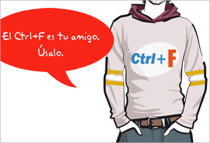
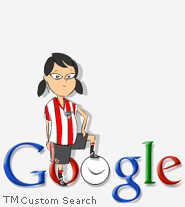

:: Sitio web de Roberto Gutiérrez durante mi etapa como diseñador gráfico en Kale Dor Kayiko
:: Inicio /
Mi trabajo en Kale Dor Kayiko:

El 90% de usuarios de internet desconoce el uso de "CTRL+F"
"CTRL + F" es un estándar dentro de los navegadores web a través del cuál se pueden realizar búsquedas rapidamente dentro de una propia página web.
Un estudio de Google indica que el 90% de los usuarios confiesa que no conoce el uso de este comando y para realizar una búsqueda dentro de una misma página web realizan una búsqueda manual o la opción disponible en el menú superior del respectivo navegador, opciones más tediosas y lentas.
 Fuente:Gizmodo...
Fuente:Gizmodo... Ilustración: recursos2D...
Ilustración: recursos2D...
Buscador:

Roberto Gutiérrez. Ilustrador y diseñador. Actualmente: Diseñador gráfico de Kale Dor Kayiko.